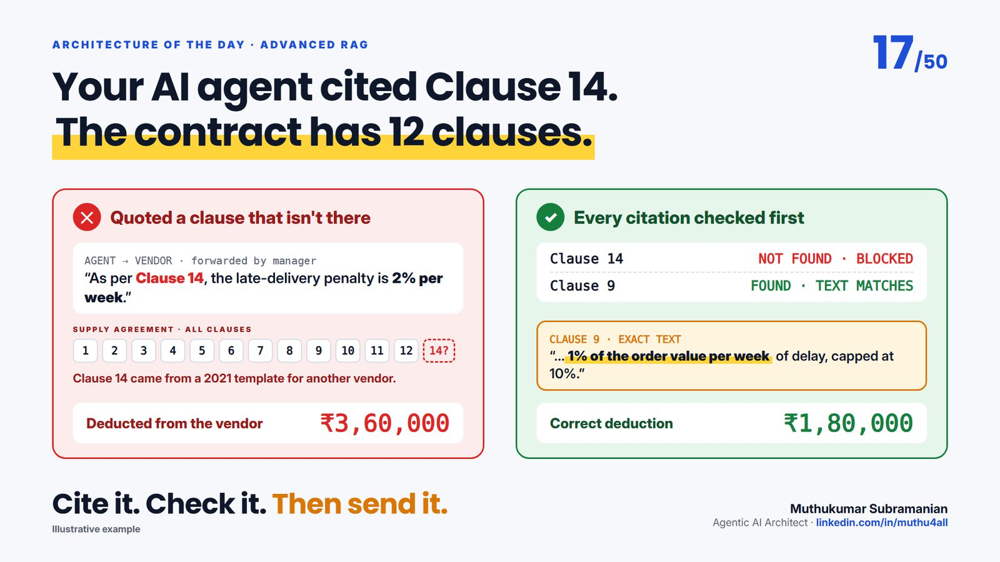

Your AI Agent Cited Clause 14. Clause 14 Doesn't Exist. Who Signed Off?
By Muthukumar Subramanian · Agentic AI Architect

A vendor in Hosur supplies castings to a Chennai manufacturer. Their last order ran three weeks late, so they ask how much will be deducted.
The procurement team's new AI agent drafts the reply in seconds: "As per Clause 14 of our supply agreement, the late-delivery penalty is 2% per week. ₹3,60,000 will be deducted." A manager skims it and forwards it.
Two hours later, the vendor's lawyer replies. The agreement has 12 clauses. The real penalty is in Clause 9: 1% a week, capped at 10%. That's ₹1,80,000, not ₹3,60,000. (The companies and numbers are illustrative. The pattern is very real.)
Where did Clause 14 come from? An old 2021 template for a different vendor, sitting in the same document store. The agent blended two contracts and quoted the result with total confidence.
A citation isn't proof. It's a claim that someone has to check.
The architecture today
Yesterday, on Day 16, we looked at basic RAG: retrieval-augmented generation. You cut documents into pieces, turn each piece into an embedding, find the pieces that look most similar to the question, and let the model answer from them.
It works well in a demo. In a legal or finance setting it fails in three predictable ways:
→ Fixed-size chunks cut clauses in half. Clause 9's penalty sits in one chunk and its 10% cap in the next.
→ Vector search finds what's similar, not what's correct. A 2021 template about late delivery looks very similar to the 2025 contract about late delivery.
→ Nobody checks the citation. The model writes "Clause 14" and the system passes it straight through.
My contrarian view: most RAG failures aren't model failures. They're retrieval and checking failures, and you can fix them without changing the model.
👉 [IMAGE: A-day17-2-in-article-architecture.png]
Caption: Advanced RAG: chunk by clause, filter by metadata, search wide, rerank hard, and check every citation in code before anything goes out. Grey is what you already have. Amber is new.
Where AI plugs in now: five fixes, all boring, all effective
→ Chunk by clause, not by word count. One chunk per clause, with its number, the contract it belongs to and its effective date.
→ Filter before you search. This vendor, this contract, the current version and its amendments. The 2021 template never enters the race.
→ Hybrid search. Keywords catch the exact words "Clause 9" and "liquidated damages". Vectors catch the meaning of "penalty for delay". Elasticsearch, OpenSearch, Azure AI Search and Vespa all support combining the two.
→ Rerank. Pull 20 candidates, then let a reranker pick the best three. It reads the question and each passage together, which is slower and far more accurate than a similarity score.
→ Check every citation in code. The model must quote the exact text with the clause number. A plain function then checks two things: does that clause exist in the retrieved sources, and does the quoted text match the source word for word? If either fails, the answer is held.
That last step is the one most teams skip. It's also the one that would have stopped Clause 14.
Where it's heading with agents
We've already seen what happens when nobody checks. In 2023, a New York judge fined two lawyers and their firm $5,000 for filing a brief with case citations ChatGPT had made up (Mata v. Avianca).
The message: the people who sign answer for what their AI says. Not the model vendor, and not "the system".
So in two or three years, I expect citation checks to become as normal as unit tests. Every agent that quotes a contract, policy or regulation will run a checker before it speaks, keep an evaluation set of real questions with known answers, and publish its scores. Answers that move money will carry the name of the person who approved them.
👉 [IMAGE: A-day17-3-in-article-basic-vs-advanced.png]
Caption: Same model, different plumbing. Six differences between basic and advanced RAG. Illustrative.
Watch it work
One vendor question. Twenty candidates, three after reranking, one draft with two citations. One of them doesn't exist.
👉 [GIF: A-day17-4-in-article-citation-check.gif]
Caption: Retrieve 20, rerank to 3, draft, check every citation. The fake one turns red and the answer is held. All figures illustrative.
Pros
→ Wrong-contract answers mostly disappear once metadata filters run first
→ Fake citations get caught by plain code before a vendor or a lawyer sees them
→ You can measure quality every week instead of hoping, and show the numbers to audit
Cons
→ Reranking and checking add latency and cost to every question
→ A citation check proves the clause exists, not that the agent understood it correctly
→ Clause-level chunking needs clean documents, and many contracts are scanned PDFs with handwritten amendments
The hard part
It's not the reranker. It's the test set. Someone has to write 200 real questions with the right answers, signed off by legal: "What's the penalty for three weeks' delay on the Hosur contract?" Answer: Clause 9, 1% a week, capped at 10%.
Nobody in legal wants that job, and nobody in IT knows the answers. That gap is filled by a forward deployed engineer (FDE), an engineer who sits inside the customer's team and ships on their real systems. They spend two weeks with legal and procurement, collect the questions people actually ask, and turn them into tests that run every night.
Then a Context Engineer, the person who decides what the agent reads and how it's split, owns the chunking, the metadata and the filters. Both titles are still settling. The work isn't optional.
And sign-off needs a name. If an agent's answer deducts money from a vendor, someone in procurement approves it with the clause on screen. "The agent said so" won't hold up in front of the vendor's lawyer.
The opportunity
Most companies that built a RAG assistant in the last two years built the Day 16 version. It demos well and fails quietly. They'll pay to find out how often.
That's the market: RAG quality tuning as a consulting service. Audit the assistant against a real test set. Report three numbers: did it find the right passage, did the answer stay faithful to it, and were the citations real. Then fix the plumbing: clause-level chunks, metadata filters, hybrid search, a reranker and a citation checker. Run the test set monthly and send one report.
In India, start where documents carry money: procurement and vendor contracts, insurance policies, loan agreements, and the GST circulars every finance team keeps asking about.
Tools to try
Elasticsearch or OpenSearch for hybrid search with reciprocal rank fusion · Azure AI Search with its semantic ranker · Vespa · Cohere Rerank or an open-source reranker · Ragas, DeepEval or Langfuse for evaluation sets and faithfulness scores · any model behind the agent: Claude, GPT, Gemini or an open model.
Your turn 👇
When an AI agent quotes a contract to a vendor, who should sign off: legal or procurement? One word.
Tag the person in your company who actually knows what Clause 9 says.
Day 17 of 50 · follow along. Tomorrow: Day 18 · Three Companies. One Owner. ₹50 Lakh Credit. Your AI Agent Didn't Connect Them.